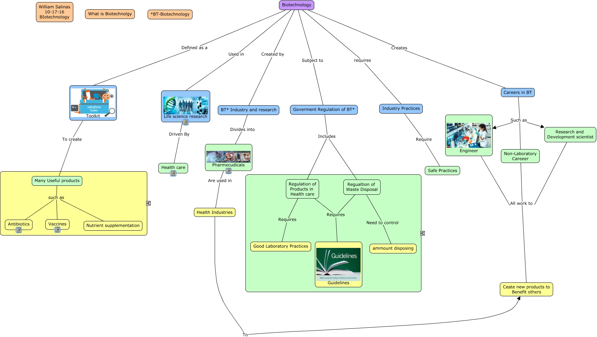

WARNING:
JavaScript is turned OFF. None of the links on this concept map will
work until it is reactivated.
If you need help turning JavaScript On, click here.
This Concept Map, created with IHMC CmapTools, has information related to: WhatisBiotech_WS10-17-16, Regulation of Products in Health care Requires Guidelines, Regualtion of Waste Disposal Requires Guidelines, Life science research Driven By Health care, Biotechnology requires Industry Practices, Careers in BT Such as Research and Development scientist, BT* Industry and research Divides into Pharmecudicals, Regulation of Products in Health care Requires Good Laboratory Practices, Biotechnology Defined as a Toolkit, Research and Development scientist All work to Ceate new products to Benefit others, Biotechnology Subject to Goverment Regulation of BT*, Many Useful products such as Nutrient supplementation, Many Useful products such as Antibiotics, Engineer All work to Ceate new products to Benefit others, Many Useful products such as Vaccines, Careers in BT Such as Non-Laboratory Careeer, Industry Practices Require Safe Practices, Pharmecudicals Are used in Health Industries, Biotechnology Created by BT* Industry and research, Toolkit To create Many Useful products, Regualtion of Waste Disposal Need to control ammount disposing
